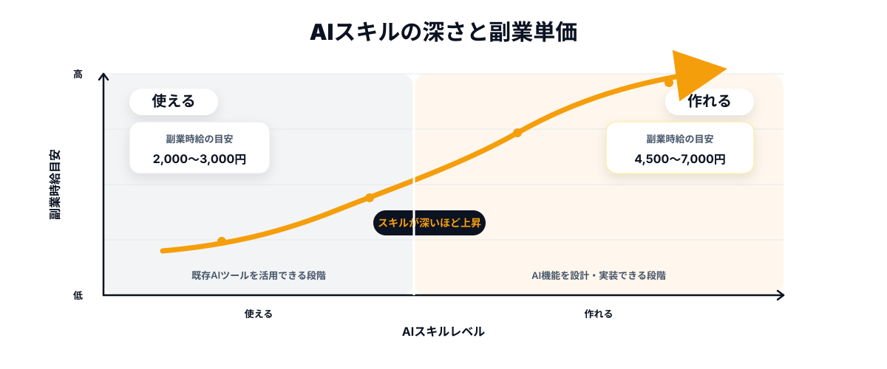
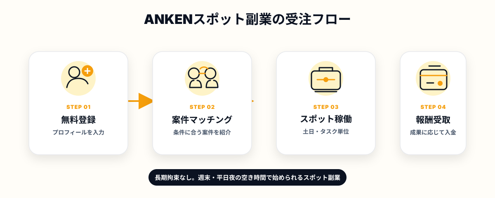

「副業を始めたいけど、どれだけ稼げるか正直わからない」「案件を探してみたが、単価が思ったより低くて続ける気になれなかった」——副業を考えたことがあるエンジニアなら、こういった壁に一度はぶつかったことがあるはずです。
しかし、2026年現在、エンジニアの副業市場はかつてとまったく様相が変わっています。AIを実務で使いこなせるスキルへの需要が急増した結果、週1日・土日だけという働き方でも、月10万〜15万円を手にするエンジニアが現実に存在しています。問題は「副業案件がない」ことではなく、「稼げる案件の選び方と、単価を正しく設定するための思考法」を知らないことです。
この記事では、2026年のAI副業市場でエンジニアの単価がなぜ急上昇しているのか、その構造を整理したうえで、週1日のマイクロコミット型副業で月15万円に近づくための具体的な考え方と実践ステップを解説します。
副業エンジニアの時給相場が急騰している、本当の理由
2026年に入り、フリーランス・副業エンジニア向け案件の単価は、特定のスキル領域で明らかに上昇しています。シューマツワーカーやレバテックフリーランスなどの各種プラットフォームのデータを見ると、LLMやRAGの実装経験があるエンジニア、AIエージェントを組める人材の稼働単価は1〜2年前と比較して1.5〜2倍程度に跳ね上がっています。
この背景にあるのは、単純な需要と供給のミスマッチです。「AIを社内に導入したい」「ChatGPT APIを使ったツールを作りたい」という発注ニーズは急増しているのに、実際にそれを実装できるエンジニアはまだ少数です。採用市場でAIエンジニアを正社員として採れる企業はごく一部に限られているため、その分の需要が副業・業務委託市場に流れ込んできています。
もう一つの要因は、副業解禁の流れです。厚生労働省の副業・兼業ガイドライン整備以降、大企業・メガベンチャーを中心に副業を認める動きが加速しています。その結果、「採用市場には出てこない質の高いエンジニア」が副業市場に参入しはじめ、発注側からの信頼度も上がっています。
- AIスキルへの実務需要が急拡大し、対応できるエンジニアが絶対的に不足している
- 採用が難しいため、需要が副業・業務委託市場に流入している
- 副業解禁でハイスペックエンジニアが副業市場に参入し、発注側の信頼も向上
- 「週末だけ・タスク単位」でも成果を出せるスポット型の受注が定着しつつある
つまり、今の副業市場で単価を上げるための最大の武器は「AIを実務レベルで扱えること」と、「小さな単位で確実に成果を出せること」の組み合わせです。この2つが揃うエンジニアへの需要は、2026年において構造的に高止まりしています。
「AIを使える」と「AIで作れる」は、単価が2〜3倍違う
副業市場でよく見かける誤解があります。「ChatGPTを使いこなせる」「プロンプトを書ける」というスキルと、「ChatGPT APIを組み込んで業務自動化ツールを作れる」というスキルは、発注者にとってはまったく別物です。前者はビジネス職でも持っている人が増えており、単価は低い。後者はエンジニアにしかできない領域であり、単価が高い。
具体的に整理すると、2026年現在の副業市場で高単価につながるスキルは次のようなものです。
まず、LLM組み込み開発です。OpenAI APIやAnthropicのAPIを使って、社内ツールやSaaSのバックエンドにLLM機能を組み込む実装ができること。次に、RAG（検索拡張生成）の構築です。社内ドキュメントや商品データベースをベクトル化し、LLMが正確な情報をもとに回答できる仕組みを作れること。そしてAIエージェントの実装——LangChainやCrewAIを使って複数のAIが連携して自律的にタスクをこなすシステムを作れること。これらのスキルを持つエンジニアの副業時間単価は、一般的なフロントエンド・バックエンドエンジニアの2〜3倍になっているケースも珍しくありません。

重要なのは、これらのスキルは「高い山」ではないということです。すでにバックエンド開発の経験があるエンジニアであれば、OpenAI APIの基本的な使い方を覚え、RAGの実装を1〜2本こなすだけで、発注者から見た「AIで作れるエンジニア」の水準には達します。問題はスキルの有無より、「自分にできる実装の成果物を見せられているか」です。
週1日スポット案件で月15万円を現実にする3つの条件
「週1日の副業で月15万円」と聞くと現実離れして聞こえるかもしれませんが、計算してみると意外とシンプルです。月4週間のうち1日（約8時間）稼働した場合、時給換算で約4,700円が月15万円の目安になります。これは、AIスキルを持つエンジニアの副業市場での中位〜やや高めの水準であり、不可能な数字ではありません。そのためにクリアすべき条件が3つあります。
条件①｜週単位ではなく「タスク単位」で動ける案件を選ぶ
副業で最も消耗するのは、「毎週固定でコミットする」形の契約です。本業が繁忙になった週、プライベートの予定が重なった週でも稼働が求められると、心理的な負荷が大きくなり、副業そのものが続かなくなります。
代わりに選ぶべきは「このタスクをこの期間内に完了させる」というタスクドリブンのスポット案件です。スコープが明確なため、稼働日をある程度自分でコントロールしやすく、成果物ベースで評価されるため、作業効率の高いエンジニアほど時間あたりの収益が上がります。ANKENが提供するのはまさにこのタスク単位・スポット型の案件であり、「週1日しか動けない」という制約をそのまま強みにできる構造になっています。
条件②｜スキルを「使える」ではなく「成果物」で示す
副業案件において、単価交渉の最大の武器は「実際に作ったものを見せること」です。どれだけ経験年数が長くても、どれだけ本業での実績が豊富でも、発注者にとっては「自分の依頼と近いものを作った人かどうか」が最も重要です。
具体的な手順として有効なのは、まず最初のスポット案件を「少し低めの単価でいいから確実にやり切る」ことです。そこで明確な成果物（デモ動画、GitHubリポジトリ、動作するプロトタイプなど）を発注者に手渡せると、次回からの単価交渉で主導権を持てるようになります。ANKENでスポット案件を1本こなすと、その実績が次の案件獲得にも直結します。
条件③｜マイクロコミットで実績を積み、単価を自然に上げる
副業で単価を上げる最も着実な方法は、1件ごとに成果物の質を高め、それを次の案件獲得に活かすサイクルを回すことです。1回のスポット案件が終わった後に「このプロジェクトで得た知見」「実装したコードの一部（守秘義務の範囲で）」「改善提案」などをポートフォリオに追加していく習慣が、6か月後・1年後の単価水準を大きく変えます。
週1日のマイクロコミットを続けることには、収益以外にもう一つ大きな価値があります。それは「本業では経験できない技術の実践」です。メガベンチャーや大手IT企業では、新しいAI技術を試せる場面が限られていることも多く、スポット副業が「PoC環境」として機能するケースがあります。副収入とスキルアップを同時に得られるのが、スポット型副業の本質的な強みです。
ANKENのスポット案件が副業エンジニアに選ばれる理由

ANKENに登録・稼働している副業エンジニアから聞く声で特に多いのは、「毎週のコミットを求められないので、本業と両立しやすい」という点です。多くの副業プラットフォームでは「週○時間以上稼働できること」が参加条件になっているケースが多く、繁忙期を抱える本業エンジニアには参入のハードルが高い現実があります。
ANKENの案件は、発注者側も「このタスクをスポットで完了させてほしい」というニーズを持って発注しているため、エンジニア側は稼働曜日や時間帯をある程度コントロールしながら参加できます。土曜の午前中だけ、日曜の夜にまとめて、平日の隙間時間で少しずつ——というリズムで動くエンジニアが実際に多くいます。
また、ANKENに発注している企業はメガベンチャー出身・AI開発経験のあるエンジニアを求めているケースが多く、登録エンジニアのスキルセットと発注ニーズが噛み合いやすい点も特徴です。「自分のスキルが活きる案件に出会える」という声は、継続的に稼働しているエンジニアから一致して聞かれます。さらに、案件がひとつ完了するごとに次の依頼につながりやすい設計になっており、スポット1回で終わらず継続的な副収入に育てているエンジニアも複数います。
- 週1日・土日・平日夜のみの稼働で、無理なく副収入を得たい本業エンジニア
- LLM・RAG・AIエージェントなど最新のAI技術を実務で試したい
- 本業では経験できないスタートアップやグロースフェーズの開発に関わりたい
- 毎週のコミット義務がなく、自分のペースで案件を選べるスタイルが合っている
- スポット案件の実績を積み重ねて、副業単価を段階的に上げていきたい
よくある質問
- Q. 副業エンジニアの単価が上がっている理由は何ですか？
- A. AI活用を任せられる人材への需要が急増する一方、対応できるエンジニアの供給が追いついていないためです。
- Q. 「AIを使える」と「AIで作れる」で単価はどう違いますか？
- A. 作れるスキルを持つエンジニアは、使えるだけの人材の2〜3倍の単価がつくケースがあります。
- Q. 週1日で月15万円は現実的ですか？
- A. 条件次第で現実的です。単価の高い案件を選び、継続的に稼働することで実現しやすくなります。
まとめ
2026年の副業エンジニア市場は、AIスキルへの需要急増と副業解禁の流れが重なり、特定のスキルを持つエンジニアにとって単価を上げる絶好の環境が整っています。重要なのは「AIを使える」ではなく「AIで作れる」レベルのスキルを持ち、それを成果物で示せること。そしてタスク単位・スポット型の案件を選び、マイクロコミットで実績を着実に積み上げることです。
週1日という制約は、正しい案件と思考法があれば弱点にはなりません。むしろ「タスクスコープが明確なスポット案件」との組み合わせでは、それが最も効率よく稼げる形になります。副業収入と最新スキルの実践を同時に手に入れたいなら、まずANKENへの登録から始めてみてください。
毎週のコミット義務なし。タスク単位で動けるAI・フルスタック案件が揃っています。まず登録するだけでOK、費用は一切かかりません。
👉 無料でエンジニア登録する登録費用ゼロ・稼働義務なし。どんな案件があるか確認するだけでもOKです。